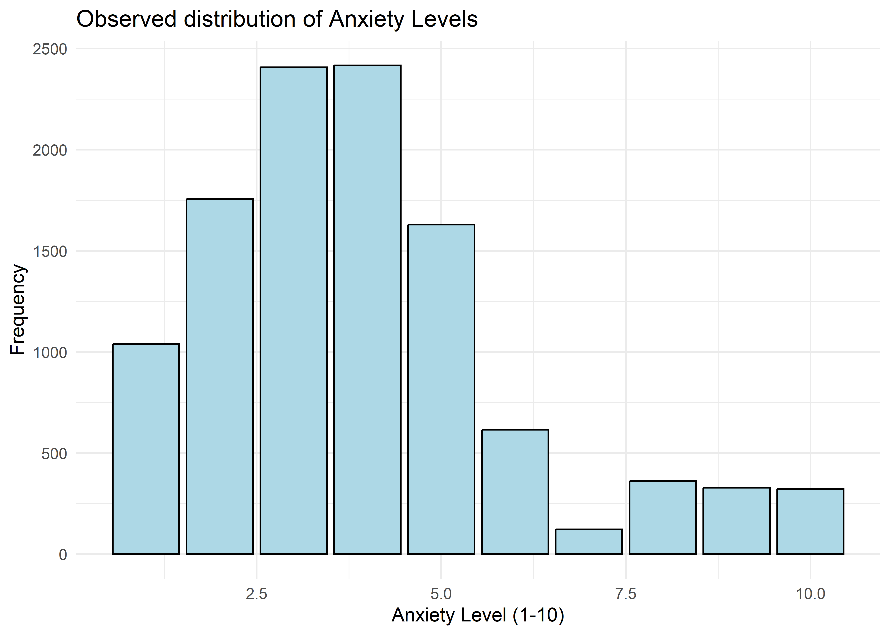
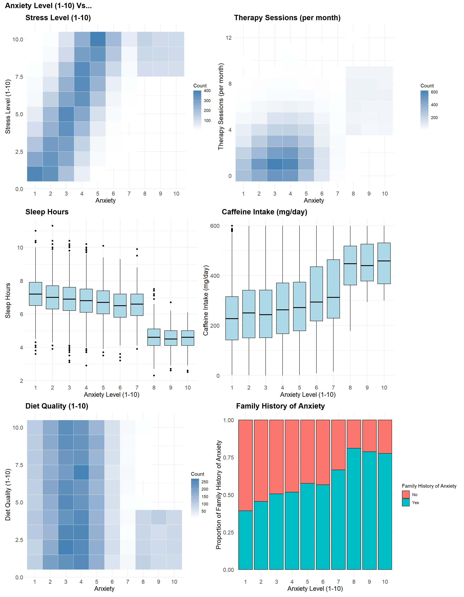
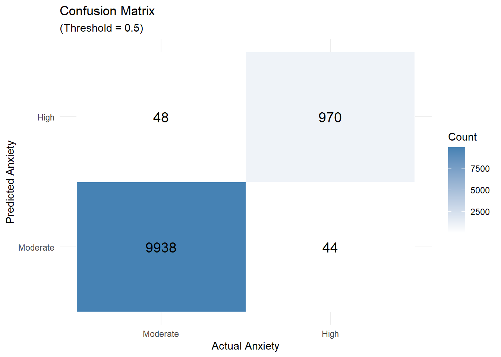
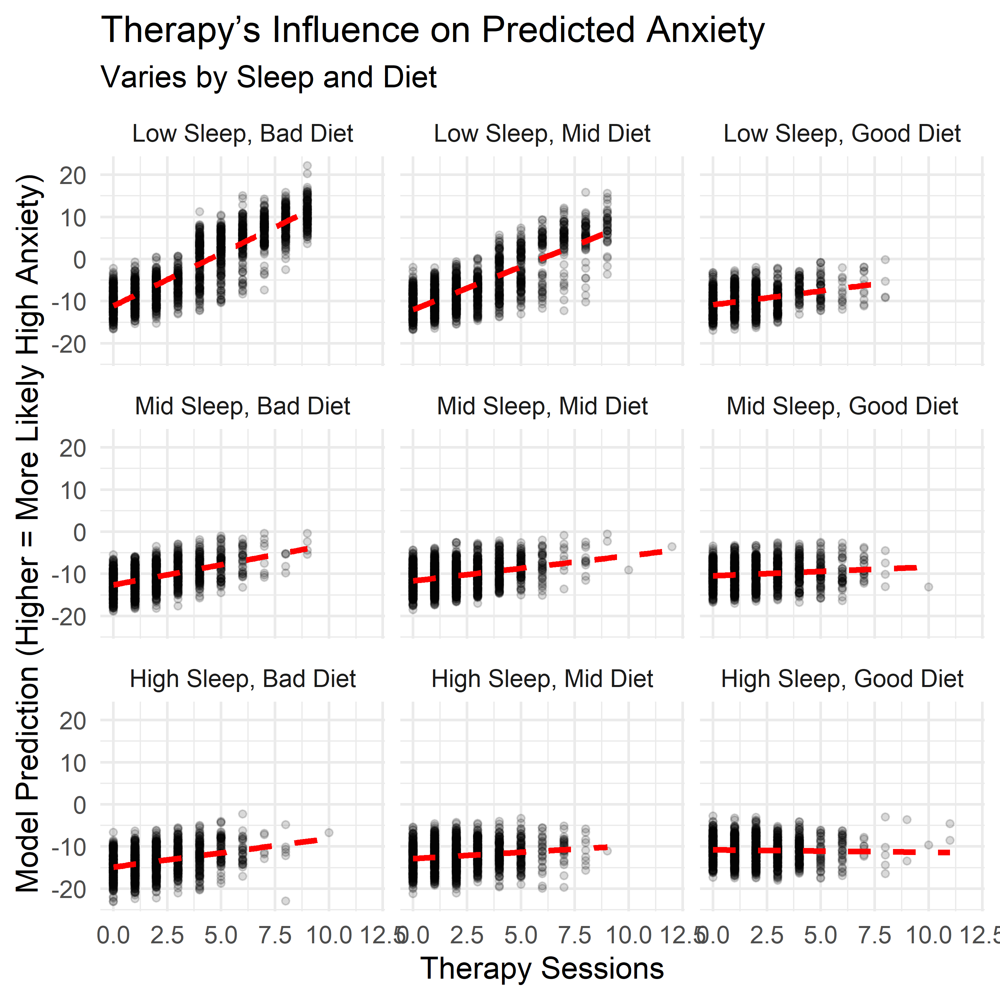
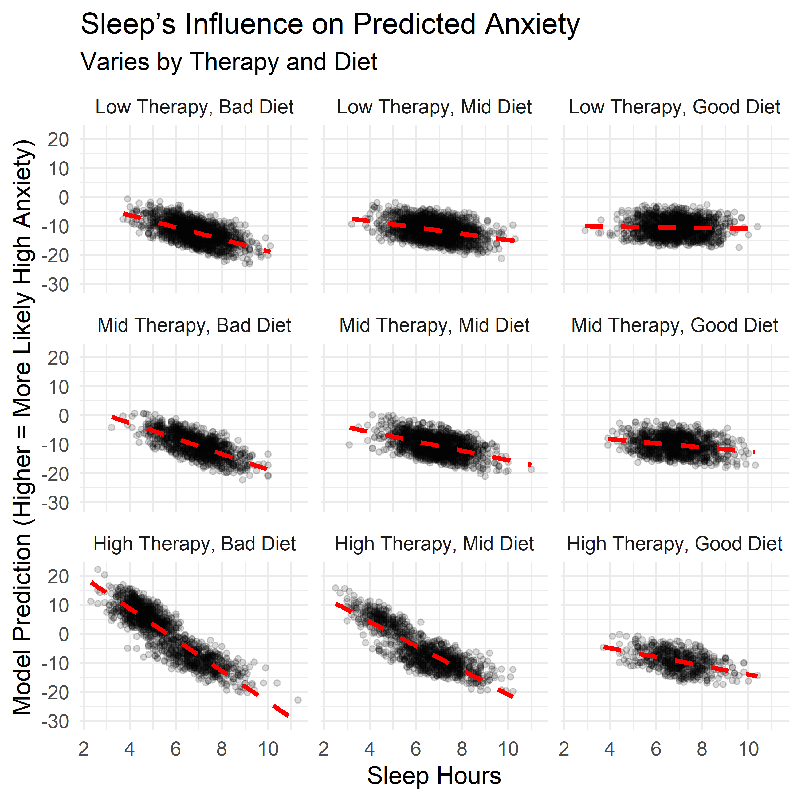
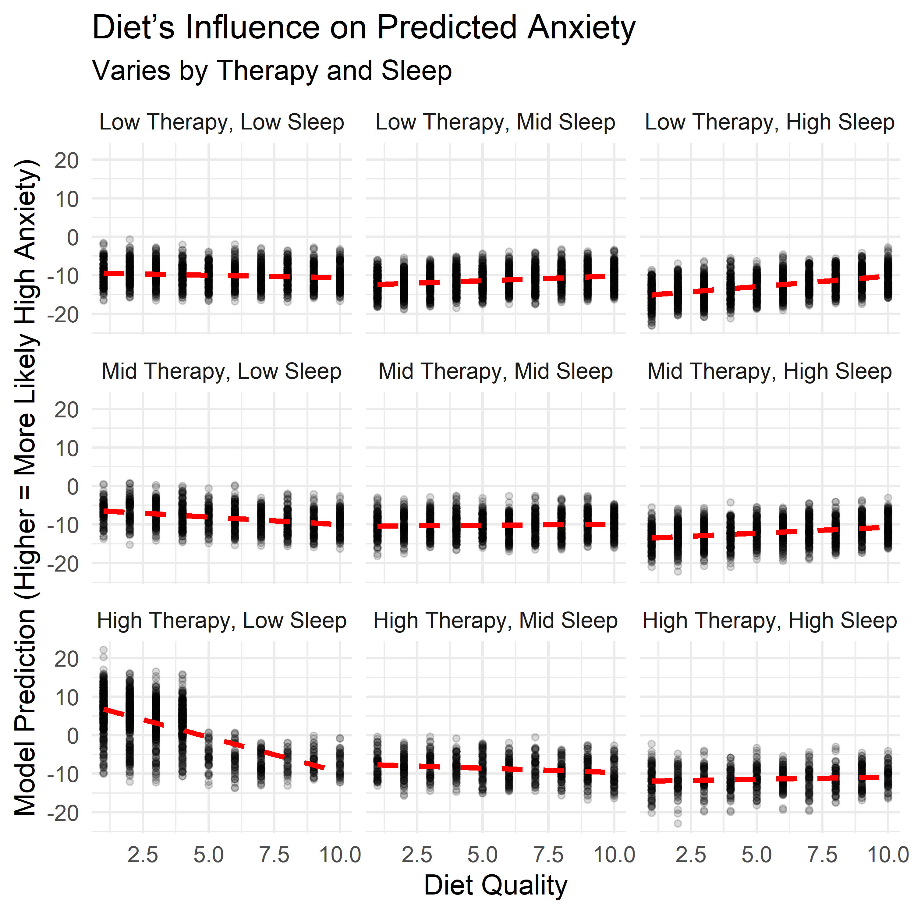
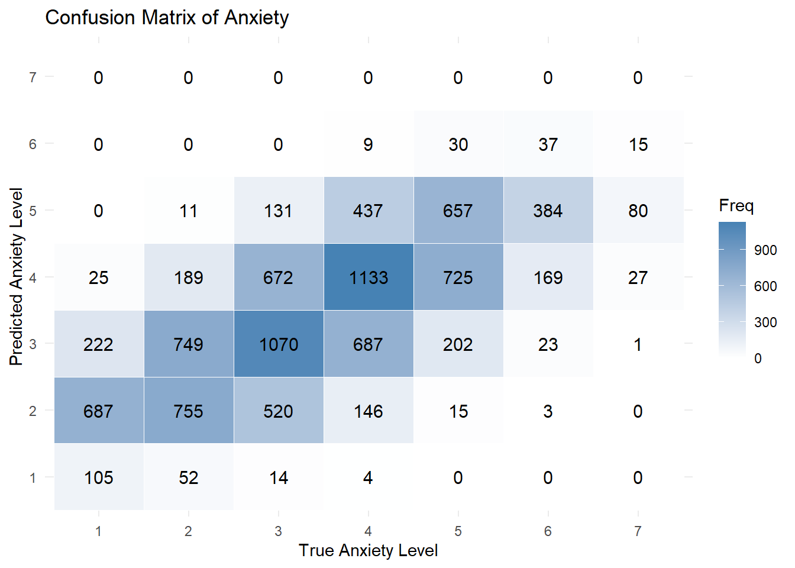

Exploring the Link Between Lifestyle and Anxiety
Motivation
As a data scientist — and someone who personally struggles with anxiety — I wanted to explore something both meaningful to me and full of real-world complexity.
This project looks at how anxiety tends to show up alongside everyday habits — things like stress, sleep, caffeine, and diet. It’s not about diagnosing anyone. Instead, the goal is to spot patterns that appear again and again — clues that might help us understand anxiety a little better and talk about it more clearly.
To do this, I used Nate Zhang’s Social Anxiety Dataset, a synthetic dataset built for research. While it doesn’t contain real people’s data, it mirrors patterns found in actual surveys — making it a safe and realistic starting point for exploring how lifestyle might relate to anxiety.
What the Data Looked Like
he dataset included self-reported anxiety levels rated from 1 (very low) to 10 (very high), along with a range of lifestyle and behavioral traits. As shown in the chart below, most responses landed in the moderate range — with very high anxiety levels (8 to 10) relatively rare.
Key Variables and Initial Trends
We focused on six variables that consistently showed relationships with anxiety:
- Stress Level (1–10): Higher stress scores were often reported alongside higher anxiety — one of the clearest visual patterns in the data.
- Therapy Sessions (per month): People with moderate anxiety usually reported 0–2 sessions, while those with high anxiety more often reported 4–9 — forming two clear clusters.
- Sleep Hours: Individuals with higher anxiety — especially at levels 8 to 10 — tended to report fewer hours of sleep.
- Caffeine Intake (mg/day): Anxiety tended to rise with caffeine, though the pattern wasn’t as steep as with stress or sleep.
- Diet Quality (1–10): No one with high anxiety rated their diet quality above a 5 — a sharp cutoff not seen in other groups.
- Family History of Anxiety: This became more common as anxiety levels rose — from under 50% at the low end to over 75% at the high end.
When we look at these variables side by side, a few patterns begin to emerge:
- Higher stress and caffeine are more common at higher anxiety levels.
- Sleep and diet quality tend to drop as anxiety increases — especially at the high end.
- Therapy sessions show a split: low-to-moderate anxiety with minimal use, high anxiety with frequent sessions.

A Two-Part Strategy
Anxiety scores at the high end of the scale (8–10) followed different patterns than the rest of the data. These cases were less common, more extreme, and didn’t align with the trends seen at lower levels.
Trying to use a single model would have forced the data into patterns that didn’t fit — especially when it came to identifying people with the highest anxiety levels.
To address this, I used a two-part strategy:
- A binary model to flag individuals with high anxiety (levels 8–10).
- A second model to predict specific anxiety levels within the more moderate range (1–7).
This setup helped us model each group more effectively, without forcing a single approach to cover conflicting patterns.
Labeling High Anxiety (Levels 8–10)
Understanding High Anxiety (Levels 8–10)
To explore what kinds of factors tend to separate high-anxiety (8–10) cases from others, I built a logistic regression model using five lifestyle variables that showed strong relationships in earlier analysis:
- Stress level
- Sleep hours
- Caffeine intake
- Diet quality
- Therapy sessions
The model estimates the log-odds of being in the high-anxiety group — a standard way of modeling relative risk. The equation below summarizes how each variable contributes. We’ll focus on the direction and relative size of each effect just after.
\[ \begin{align*} \widehat{\log\left[\text{Odds}_\text{High Anxiety}\right]} =\ & -1.269 \\ &+ 1.071\ \cdot\ \text{Therapy Sessions} \\ &+ 0.865\ \cdot\ \text{Stress Level} \\ &- 2.596\ \cdot\ \text{Sleep Hours} \\ &+ 0.0106\ \cdot\ \text{Caffeine Intake} \\ &- 0.556\ \cdot\ \text{Diet Quality} \end{align*} \]
Stress and sleep had the largest coefficients — suggesting stronger associations with high anxiety. Therapy sessions, diet, and caffeine played smaller but consistent roles. Let’s break those roles down:
- Higher stress levels were strongly linked to high anxiety — one of the clearest patterns in the data.
- More sleep was tied to a lower likelihood of high anxiety. Even one extra hour made a noticeable difference.
- More therapy sessions were associated with a higher predicted risk. This doesn’t mean therapy causes anxiety — more likely, people with higher anxiety are more likely to seek support.
- Caffeine intake had a small effect per milligram, but its cumulative impact was noticeable.
- Higher diet quality was associated with lower anxiety, though its effect was smaller than stress or sleep.
Does the Model Hold Up?
To make sure the model was actually picking up real patterns — and not just noise — I ran a few simple checks. These aren’t about pinpointing exact outcomes or predicting individuals. Instead, they help confirm that the model reflects structure in the data: that the relationships it found between anxiety and lifestyle factors show up consistently across the sample.
Below is the confusion matrix, which shows what happens if we use a 50% threshold: anyone with a predicted probability above 50% is labeled as “high anxiety.”
- Out of 1,014 individuals who actually had high anxiety, 44 were missed (false negatives).
- 48 people were incorrectly flagged as high anxiety (false positives).
It’s not a perfect separation, but the results reflect a general alignment with the earlier patterns in the data.

Contextual Effects in Anxiety Patterns
The main model looks at each factor independently. But in practice, lifestyle traits don’t operate in isolation — they overlap, reinforce, and sometimes offset one another. To explore this, I examined how three key factors — sleep, diet, and therapy use — interacted with each other when estimating the likelihood of high anxiety.
Each panel below shows how the relationship between one factor and anxiety shifts depending on levels of the other two. These aren’t predictions from the main model — they come from a follow-up model that includes interactions, allowing us to examine how the effects of one habit depend on the context of the others.
A few patterns stood out:
- Therapy sessions were most strongly associated with high anxiety when both sleep and diet quality were low. But when both were strong, therapy use had little to no additional association with anxiety risk. This suggests therapy may be most common or most reactive in settings where other supports are lacking.
- Sleep showed a more protective pattern when therapy use was high or diet was poor — possibly acting as a buffer when other conditions were less favorable.
- Diet quality displayed a less linear pattern. It seemed to buffer anxiety when sleep was low or therapy use was high, but the trend flattened — or even slightly reversed — when those other supports were already strong.
These effects weren’t included in the final model — keeping things simple and interpretable was the priority. But they help highlight a key point: the impact of any one behavior may shift depending on what else is happening. Context matters, and these interaction plots offer a more layered view of how anxiety and lifestyle habits relate in this dataset.



Understanding Moderate Anxiety (Levels 1–7)
To explore how different lifestyle traits relate to anxiety scores in the moderate range (1–7), I used a linear regression model. While these scores are ordinal rather than continuous, a linear model offers a simple and interpretable way to summarize how each factor tends to shift the outcome.
The equation below shows how each variable contributed to the model’s estimates:
\[ \begin{align*} \widehat{\text{Anxiety Level}} =\ & 2.503 \\ &+ 0.339\ \cdot\ \text{Stress Level} \\ &- 0.230\ \cdot\ \text{Sleep Hours} \\ &+ 0.0014\ \cdot\ \text{Caffeine Intake} \\ &+ 0.0915\ \cdot\ \text{Therapy Sessions} \\ &+ 0.116\ \cdot\ \text{Family History (Yes)} \end{align*} \]
Stress and sleep again had the strongest associations with anxiety scores. Therapy sessions, caffeine, and family history also contributed, but their effects were more modest.
- Each additional point on the stress scale raised the predicted anxiety level by about 0.34 points.
- Each extra hour of sleep lowered it by about 0.23 points.
- Each therapy session per month added around 0.09 points.
- Caffeine had a small effect per milligram — about 0.0014 points.
- Having a family history of anxiety added about 0.12 points on average.
These individual shifts were small, but consistent. And taken together, they helped the model describe broad trends in how anxiety levels varied across the sample.
Does the Model Hold Up?
As shown in the confusion matrix below, most predictions clustered near the correct value — especially in the middle of the scale. That’s a reasonable result for a seven-point measure, where even human responses often blur the line between, say, a 4 and a 5. More specifically:
- It predicted the exact anxiety level correctly 37.6% of the time.
- It was within ±1 point of the true level 87.3% of the time.
On the other hand, the model struggled at the extremes, rarely predicting the lowest or highest scores. Considering we already flagged high risk individuals, this limitation is acceptable. Still, it’s a helpful reminder that this model is better suited for exploring overall trends than for making precise individual predictions.

Key Insights
While this is synthetic data, it mirrors real-world patterns — and a few key themes stood out:
Sleep and stress were the most consistently associated with anxiety levels. These patterns weren’t subtle: higher stress and less sleep closely tracked with higher anxiety, across both models and every part of the analysis. While that might feel intuitive, the consistency and strength of these links are worth noting. It’s a reminder that even simple, daily experiences can meaningfully align with how anxiety presents.
Therapy use was strongly linked to high anxiety — likely as a response, not a cause. People attending more sessions were more likely to fall in the high-anxiety group. This likely reflects a reactive pattern: those in distress are more likely to seek help. In that way, therapy use became one of the most distinguishable signals in the model — not because it causes anxiety, but because it often accompanies it. It’s a good example of how responses to a condition can become some of its most visible markers.
Caffeine showed a mild association with anxiety. There was a trend: more caffeine, more anxiety. But the effect was small and gradual — much weaker than stress or sleep — and may reflect other underlying factors like sleep quality or stress levels. This isn’t a warning against coffee, but a small nudge toward moderation and context.
Diet quality revealed a sharp pattern at the high end of anxiety. In the high-anxiety group, no one rated their diet above a 5. That kind of cutoff didn’t show up elsewhere. While this might partly reflect the structure of the synthetic data, it raises questions about how self-perceived nutrition relates to mental health. That said, the effect wasn’t as strong in other models, so more research would be needed to know whether this is a real threshold or a coincidental artifact.
Family history mattered — but less than lifestyle. People with a family history of anxiety reported slightly higher levels overall, but the effect was smaller than that of habits like stress, sleep, or diet. It seems to act more like a background signal — relevant, but less decisive.
Perhaps most importantly, no single factor explains anxiety on its own. The interaction models showed that the influence of one habit often depends on others — for example, therapy use was most predictive of high anxiety when both sleep and diet were poor. But when sleep and diet were strong, therapy use alone didn’t add much predictive power. This reinforces the idea that anxiety reflects not just individual behaviors, but the context in which they occur. These lifestyle traits don’t act in isolation — they reinforce, offset, or amplify one another, shaping anxiety as a system, not a checklist.
Conclusion
Anxiety is complex. It doesn’t arise from a single habit or trait — but it does leave patterns. This project used synthetic data to explore how everyday factors like sleep, diet, stress, and therapy use tend to align with different levels of anxiety.
Some of these patterns were expected, like the close link between stress and anxiety. Others — like the conditional role of therapy use, or the sharp drop in diet quality among high-anxiety individuals — offered less familiar perspectives. These aren’t clinical conclusions, but they suggest possible avenues for deeper research.
More broadly, the analysis reinforced a key idea: context matters. The impact of one habit often depends on what else is happening. Sleep might help buffer stress. Therapy might be a strong signal in some situations but not others. These kinds of patterns only emerge when we look at combinations — not just averages.
This isn’t a final answer. It’s a starting point. It shows how even simple, interpretable models can help surface patterns in messy, human data. And it reminds us that statistical tools don’t need to be perfect to be useful — especially when they help us ask clearer questions, or think more carefully about how mental health shows up in real life.